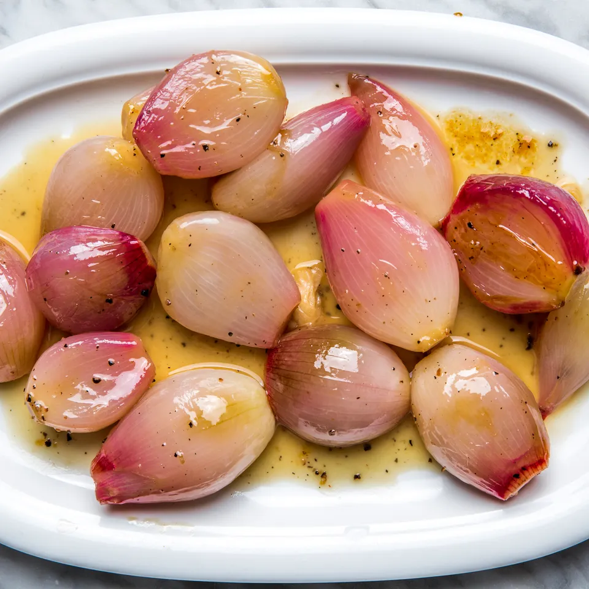

Glazed Shallots

Description
These shallots turn out soft and sweet, with a delicious umami background
from the chicken stock and a slight tang from the wine. And they play
perfectly with that roast turkey.
Ingredients
- 1¼ pounds (about 36) small shallots, peeled
- ½ cup white wine
- 1 cup homemade or low-sodium chicken stock
- 1 tablespoon granulated sugar
- 1 teaspoon kosher salt
- 3 tablespoons unsalted butter
- A few grinds of black pepper
Steps
-
In a skillet just large enough to hold the shallots in a single layer,
combine the shallots, wine, stock, sugar, salt and 2 tablespoons of the
butter. Place over high heat, bring to a boil, lower to a simmer and
cook, uncovered, until the liquid evaporates and the shallots are very
tender, about 10 to 15 minutes.
-
Raise heat to medium high and cook, shaking the pan frequently, until
the shallots begin to brown and are coated with a thick syrup. Remove
from heat and add the final tablespoon of butter, shaking the pan until
it is melted and incorporated. Serve immediately.